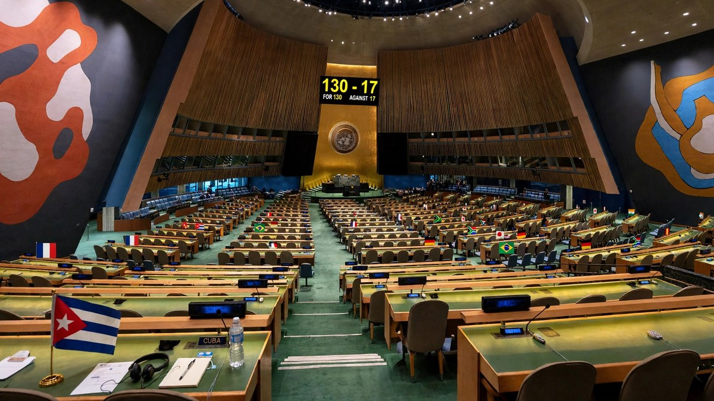
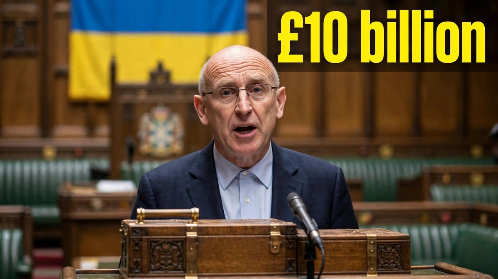
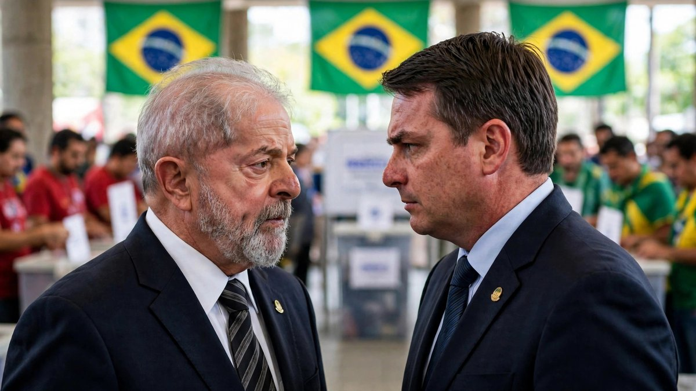
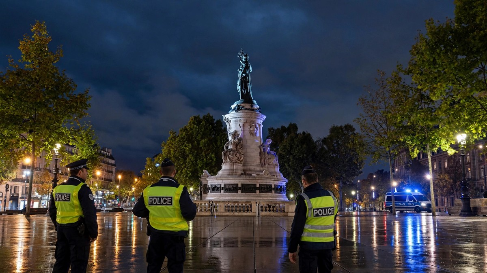

World - Big News

UN General Assembly votes 130-17 against US Cuba embargo
The UN General Assembly voted 130-17 on 28 October to call for an end to the US embargo on Cuba, with 25 abstentions, the weakest backing for the yearly call in two decades.

Britain gives extra £10 billion support to Ukraine
Britain announced £10 billion in extra support for Ukraine on 28 October, including £500 million in urgent military funding for this winter.

Lula wins fourth term as Bolsonaro refuses to concede
Brazil's electoral court called the runoff for Luiz Inacio Lula da Silva on Sunday night, giving him a fourth term. His rival Flavio Bolsonaro refused to accept the result and said he would seek to have it annulled.
Machado returns to Venezuela after nearly a year away
Nobel Peace Prize winner Maria Corina Machado returned to Venezuela on Sunday after nearly a year outside the country, appearing before jubilant crowds at a church in Santa Rosa.
Lula and Bolsonaro clash in final debate before Brazil runoff
Lula and Flavio Bolsonaro traded sharp lines on prices, crime and spending in their last televised debate, with polls tied two days before Brazil votes.
Melania Trump brokers Oleshky ceasefire in Ukraine
The White House says first lady Melania Trump brokered a localized ceasefire in the Russian-occupied town of Oleshky. Both sides agreed to stop fighting so aid can get in and civilians can leave.

Iran Says 7 Oil Tankers Attacked in Strait of Hormuz as War Fears Grow
Iran says seven oil tankers caught fire or were damaged overnight in the Strait of Hormuz. The claim could not be independently confirmed, and fears of a return to war are growing.

Macron calls Trump's migrant claims about France riots 'stupid'
Emmanuel Macron has fired back at Donald Trump over claims that migrants are behind the riots in France, calling such comments "stupid" and "completely false," a clash of presidents that has divided opinion online.

France imposes overnight curfews after weekend of riots and looting
France has imposed overnight curfews in parts of Paris and several other cities after a weekend of riots and looting. PM Sébastien Lecornu says the targeted curfews kept the peace overnight.

Sri Lanka loses power islandwide as grid trips, solar surplus blamed
Sri Lanka lost power across the whole island on Saturday morning after the national grid failed, possibly because solar power output rose above use. Supply was fully restored later the same day.

Pope Leo leaves hospital four days after lung cancer surgery
Pope Leo XIV was discharged from Gemelli Hospital in Rome on Saturday, four days after surgery for lung cancer, and returned to the Vatican.

Trump waives Russia sanctions and tariffs days before they were to take effect
President Donald Trump signed an executive order waiving many Russia-related sanctions, restrictions and duties days before they were to take effect, saying the waiver is in US national interest.

EU leaders back Zelenskyy at Brussels summit as US pressure grows
EU leaders met Volodymyr Zelenskyy in Brussels on Friday. He asked for energy, air defence and funding help to get Ukraine through the winter.

China and North Korea open long-delayed Yalu River bridge
China and North Korea opened the New Yalu River Bridge after a wait of more than 12 years. Trucks crossed between Dandong and Sinuiju at the opening ceremony.

Istanbul hit by heaviest rainfall in 83 years as floods kill three
A heavy downpour shut down Istanbul, flooded homes and roads, and killed at least three people. Rescuers evacuated more than 3,000 people stranded by the floods.

Four killed as Indonesia battles worst forest fires in over a decade
Four people tackling a wildfire in a national park on Indonesia's island of Java were killed. The country is battling its worst forest fires in more than a decade.

Drone strike on tanker off Romania raises Black Sea shipping fears
A drone struck a chemical tanker off Romania's Black Sea coast and seven sailors are missing. A second tanker was also hit, raising fears over shipping safety.